Self-hosted · Plugin-first · Yours
Shape data,
the visual way.
DataInsightGrove (DIG) is a self-hosted data-preparation studio. Drop in a file, shape it with direct manipulation, and every move becomes a step in a portable pipeline — the same pipeline that previews in your browser and runs full-scale on the backend. This manual takes you from install to your sixth worked example.
01Introduction & first steps
What DIG is, the five words you need, and your first pipeline in five minutes.
DIG is a self-hosted, plugin-first data-preparation tool. You work the way you'd work in a spreadsheet — click a column, filter it, cast it, group it — but behind every move DIG records a step in a real, portable pipeline. Nothing you do is a dead end: undo anything, replay it on new data, share it as a small JSON file, or schedule it to run every morning.
The one idea that makes DIG different
Most tools force a choice: a snappy in-browser toy that can't handle real data, or a heavyweight server tool with no live feedback. DIG refuses the trade-off with a dual-engine architecture. The exact same pipeline runs two ways:
In your browser
DuckDB-WASM previews every edit on a sample of your data, sub-second, as you type — no round-trip to a server.
On the backend
When you press Run, DuckDB (or Polars) executes the same steps over the full dataset and writes results to disk.
Five words you'll see everywhere
| Word | What it means |
|---|---|
| Dataset | An imported file or external source — the rows-and-columns input to your work. |
| Pipeline | A graph of steps that turns one or more datasets into an output. |
| Step | One transformation: filter, cast, group, join, derive, chart, export… |
| Run | One backend execution of a pipeline over the full data; writes results to disk. |
| Output | What a run writes — Parquet by default, plus any sinks you add. |
The full vocabulary lives in the Glossary (§11). Hover any dotted term in this manual for a quick definition.
Privacy posture: your data stays put
DIG is local-first by design. Datasets live in your own data directory; the backend runs on 127.0.0.1; no telemetry, no upload, no account. The optional AI assistant is off by default and, when enabled, talks only to the provider you point it at (including a fully-local Ollama). DIG is licensed AGPL-3.0-or-later.
Your first five minutes
- Install, start, open.
Three commands from the project root:
./install.sh(one-time setup),./start.sh(start the server),./stop.sh(stop it when you're done). With the server running, openhttp://localhost:3100. See §2 for the detail. - Try with sample data.
On the Home screen, click 🌱 Try with sample data — DIG imports a demo dataset and drops you into the editor with a starter pipeline.
- Shape a column.
Click any column header → choose an action (filter, sort, cast, group…). Watch the live grid update instantly. That action just became a step in the bottom strip.
- Press Run.
Hit ▶ Run to execute the whole pipeline on the backend over the full dataset. The result is written as Parquet to your data directory.
- Keep going.
Everything else in this manual builds on that loop: Ingest → Shape → Run. The six worked examples (§9) take it end-to-end.
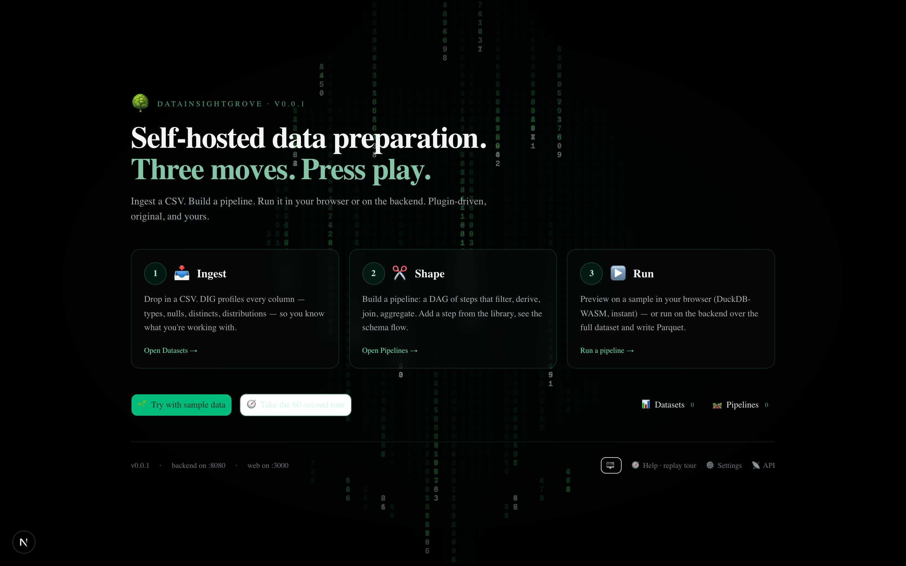
02Installation, step by step
One command on a supported OS. The guided installer detects what you have, shows a plan, asks once, then leaves DIG running.
Before you start — what you need
Python 3.11+
The backend engine. The installer can add it for you (Homebrew / apt / dnf / pacman / zypper).
pnpm + Node
For the web UI. The installer sets this up too.
A few GB free
For the virtualenv, node_modules, and your data cache.
The one-command install
From the project root, run the guided installer. It's idempotent — re-run it any time to verify or repair; already-installed tools are reported as ✓ and skipped.
# clone, then from the project root:
./install.shThe installer walks four phases, printing what it's about to do and asking once before changing anything:
- System tools.
Homebrew on macOS, Python 3.11+, and pnpm — installed only if missing.
- Optional JDBC extras.
cmake + a Temurin JDK + Apache Ant +
jpype1, for the JDBC connector and theexport_to_jdbcstep. Skippable. - Project dependencies.
The backend
.venvand the frontendnode_modules. - Start DIG.
Brings the API + web UI up in the background and prints the URLs.
Open it
When the installer finishes, DIG is already running. Open the web UI and click 🌱 Try with sample data:
3100/8190 out of the box. A self-signed TLS path on 3443/8443 is available for LAN access — see Settings → Server & TLS (§4).Day-to-day commands
Power users and CI can drive DIG with discrete commands instead of the installer:
make setup # one-time: backend venv + pnpm install make start # detached; writes a PID file, prints URLs make status # is it up? where? make stop # graceful TERM, escalates to KILL after 5s make dev # foreground (Ctrl-C to stop) make restart # stop + start
./start.sh # start in the background ./scripts/dig-status.sh # status + URLs ./stop.sh # stop ./upgrade.sh # pull + migrate to a newer version
./scripts/dig-start.sh --api-port 9000 --web-port 4000 # one shot ./scripts/dig-start.sh --api-port 9000 --save # persist to config ./scripts/dig_config.py show # effective config
Native launchers (optional)
Both wrappers run the same shell scripts and the same ~/.config/dig/config.json:
make mac-app # builds DataInsightGrove.app (macOS) ./linux/install.sh # adds the .desktop entry (Linux)
Upgrading
Run ./upgrade.sh to fetch a newer version; DIG auto-migrates its config and on-disk state on the next boot. See Settings for where that state lives.
./install.sh — it diagnoses and repairs rather than starting over. For a clean slate, ./install.sh --rebuild nukes .venv + node_modules first.03Overview of the UI
Navigate the app shell, explore the pipeline editor layout, and master the keyboard shortcuts.
The seven main pages
Every page in DIG is reachable via the ⌘K command palette or the global g chord (press g, then a letter within 1 second). The seven main sections are:
Home
Overview of datasets, pipelines, and recent activity. Tour and quick links.
Datasets
Upload CSV, Parquet, REST connectors. Profile every column — types, nulls, distributions.
Pipelines
Create, edit, run, schedule pipelines. The core workspace.
Catalog
Browse step library — built-in, packs, and user-defined steps with schemas.
Runs
History of executed pipelines. Filter by status, view outputs, trace lineage.
Schedules
Recurring pipeline triggers. Cron syntax, manual or API-driven webhooks.
Settings
Appearance (dark/light), expertise mode, performance tuning, storage backends.
The pipeline editor layout
When you open a pipeline for editing, the screen splits into three regions: data-first (top), steps (bottom), and settings (right).
Top region: Live Grid
The grid shows the output of whichever step you've selected in the strip. It updates automatically as you edit — no separate Preview button. Click a column name to open the Column Profile drawer: see the type, nulls, cardinality, histogram (for numerics), top-N values, and quick-filter buttons. Right-click a column header (or click the ⋯ menu) to sort, filter, cast, drop, or derive from that column — actions are inserted as new steps directly in the pipeline.
Bottom region: Strip and Graph views
The pipeline's steps are arranged in two complementary views, toggled via a button in the editor header:
Strip view is linear and sequential. Every step is a numbered card showing the category emoji, label, status badge (✅ success, ❌ error, ⏳ running, ⏸ paused), row count, and time since last run. It's the quickest way to scan the pipeline flow and click a step to edit it.
The Strip has a fixed 58px height and never scrolls off-screen — the data grid above scrolls internally, keeping the steps always visible.
Graph view is the true DAG: nodes (datasets, steps, outputs) with edges showing data flow. Useful for joins, unions, and complex multi-input pipelines. You can drag nodes to rearrange them; positions persist in the document. A resize handle above the graph (visible on hover) lets you adjust its height (120–700px). The graph includes a mini-map (top-right corner) and a zoom/pan toolbar.
Both views show the same pipeline — switching between them doesn't change the document, just how you see it.
Node types and visual cues
Every card in Strip and Graph view carries a top-of-card colored strip when the node has run — emerald for success, rose for error, amber for stale (outdated), sky for running. Below the card, a small clock emoji + relative time ("42m ago") and row count tell you when it last ran and what it produced.
| Node | Icon | Description |
|---|---|---|
| Dataset | 📥 | Source data (CSV, Parquet, REST connector). No inputs; one output. |
| Step | Category emoji (✂️ 🧹 ➕ 🔗 📊 etc.) | Transform step. One or more inputs; one output. Shows category label and description. |
| Output | 📤 | Sink (write to Parquet, S3, database, or chart export). One input; no outputs. |
| Group | 📦 | Named container. Dashed border. Click the title chip to edit the group's name or move steps into it. |
Right-side panels
The right sidebar has three tabbed panels. Click a tab to switch; the content refreshes instantly. When you select a step in the Strip, the panel defaults to 🎛 Params.
Params — edit step configuration
Shows the selected step's parameters (filter expression, column mappings, aggregation functions, etc.) in form controls tailored to each step type. Changes apply immediately to the live preview. A green pulsing dot indicates the preview is auto-updating; a static green dot means it's ready. At the bottom is a free-form 💬 Note field (saved with the pipeline) for documenting why the step exists, edge cases, or links to related docs.
Expose parameters: the 🪆 expose toggle on each parameter field lets you declare that parameter as an input when you publish this pipeline as a reusable step. Exposed params appear in the published-step's form when other pipelines consume it.
Hints — AI suggestions and metadata
When you focus on a step or dataset, the Hints panel shows:
- AI suggestions: click ✨ Suggest next steps to let the LLM propose downstream transformations based on the current schema and data sample.
- AI explain: click 🧠 Explain this pipeline to get a natural-language walkthrough of what the whole pipeline does.
- 📊 Profile: when focused on a dataset, see top-N values, null counts, and data-type breakdowns (live for in-browser samples, backend-computed for large datasets).
- Quick-add buttons: cards for common transformations (filter, sort, rename, derive) that jump you straight to the Params panel with pre-filled defaults.
Lineage — trace data provenance
Shows the column-level lineage of the focused step. Click 🧬 Trace lineage from a column's context menu (in the Live Grid), and this panel opens to show which upstream columns feed into it, step by step, all the way back to the source dataset. Useful for auditing "where did this number come from?"
Expertise mode
DIG auto-adapts its UI complexity to your skill level. Toggle expertise via ⌘⇧E or in Settings > Expertise mode.
| Mode | Icon | Behavior |
|---|---|---|
| 🌱 Beginner | Seedling | Simplified step library, fewer advanced toggles (Live SQL, auto-review hidden), "show me more" promote buttons on every advanced affordance. Auto-promotes to Builder after a threshold of actions. |
| 🪴 Builder | Potted plant | Full step library unlocked, all core features visible. The default tier after you've learned the basics. |
| 🌳 Engineer | Tree | Unlocks: Live SQL view (⌘⇧L), raw JSON document editor, auto-review on save (suggestions panel), column DNA deep-dives, advanced lineage visualizations. For power users. |
Command palette and global search
Press ⌘K anywhere to open the Command palette. Search by action name, step name, pipeline name, or dataset name. The palette shows:
- Recent: your last 10 pipelines and datasets, auto-populated.
- Create flows: "New blank pipeline", "Browse templates", "Upload a dataset".
- Per-pipeline actions: when you type a pipeline name, see
▶ Run,📑 Duplicate,⏰ Schedule,🔗 Copy link,⬇ Export as JSON. - Step search: type a step name (e.g., "join", "aggregate"). Inside the editor, it inserts the step; outside, it hints where to find it.
Press / (forward slash) to open the palette pre-focused on search mode. Press Esc to close any overlay.
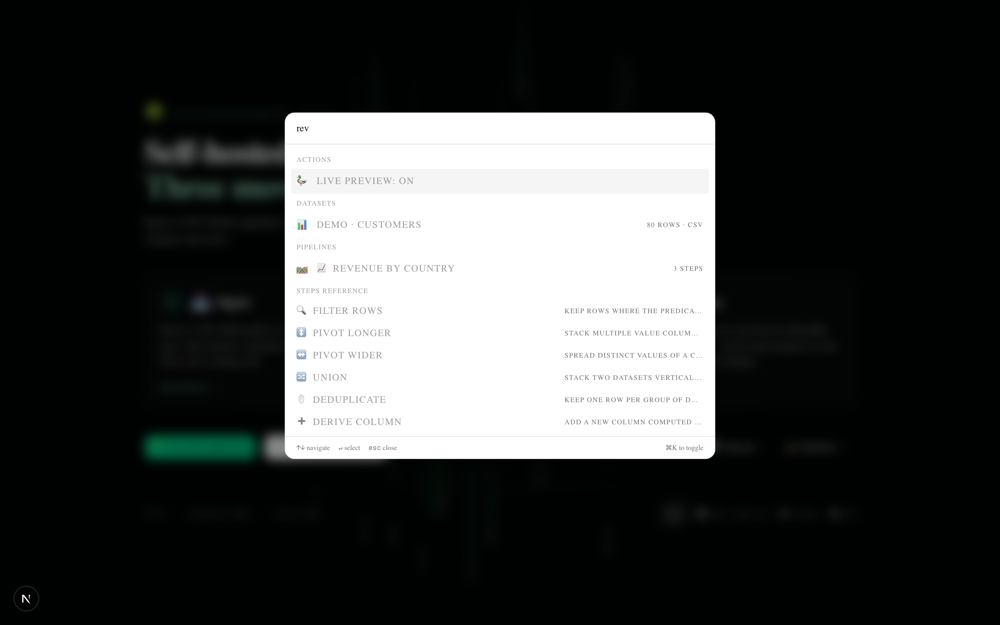
Keyboard shortcuts
DIG is designed for keyboard power users. Press ? anywhere outside a text input to see the keyboard cheatsheet overlay.
| Keys | Action | Context |
|---|---|---|
| ⌘K / Ctrl+K | Open command palette | Global |
/ | Palette pre-focused on search | Global |
| ? | Show keyboard cheatsheet | Global (outside inputs) |
| Esc | Close any overlay / dialog / menu | Global |
| g h | Jump to Home | Global (g-chord) |
| g p | Jump to Pipelines | Global (g-chord) |
| g d | Jump to Datasets | Global (g-chord) |
| g r | Jump to Runs | Global (g-chord) |
| g c | Jump to Catalog | Global (g-chord) |
| g s | Jump to Settings | Global (g-chord) |
| ⌘⇧E | Cycle expertise (🌱 → 🪴 → 🌳) | Global |
| ⌘Z | Undo | Pipeline editor |
| ⌘⇧Z / ⌘Y | Redo | Pipeline editor |
| ⌘S | Save (labeled checkpoint) | Pipeline editor |
| ⌘⇧S | Save As (clone pipeline) | Pipeline editor |
| ⌫ / Delete | Delete selected step or edge | Pipeline editor |
| Click column name | Open Column Profile drawer | Live Grid |
| Click ⋯ or right-click header | Open column menu (filter / sort / cast / drop / …) | Live Grid |
| ⌘+click cell | Filter to this value | Live Grid |
| ⌘+Alt+click cell | Exclude this value | Live Grid |
| Alt+← / Alt+→ | Reorder focused column header | Live Grid |
g first, then the second letter within 1 second. The chord is dropped silently if the second key isn't mapped. G-chords are disabled while a text input or contenteditable element is focused.
Dark mode and appearance
DIG respects your system theme (via prefers-color-scheme) and lets you override it in Settings > Appearance. Both dark and light themes are first-class — every component was designed to work beautifully in both. The emerald accent color stays consistent; text contrast is WCAG AA.
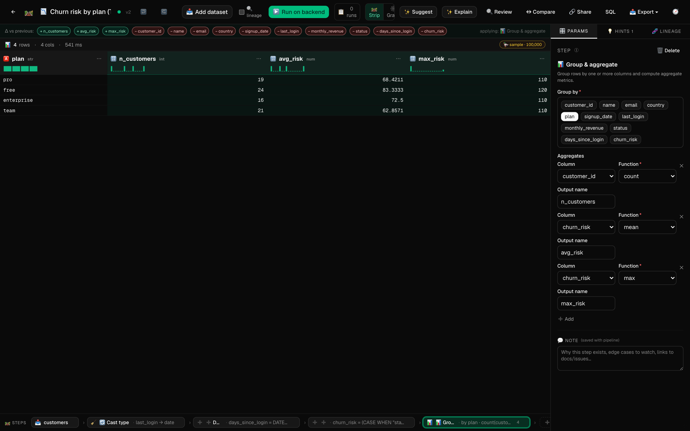
The Profile drawer
Click any column name in the Live Grid to open a side drawer showing rich statistics about that column:
- Type: logical (string, integer, date, etc.) and physical (DECIMAL(18,4), HUGEINT, etc.).
- Position: which column number it is in the dataset.
- Nulls / NaN: count and percentage. If the step did type conversions, see "X were conversion failures" for each source column.
- Cardinality: distinct value count.
- Histogram: for numeric columns, a distribution chart. Click a bar to range-filter; a new
filter_rowsstep is inserted downstream. - Top-N values: for strings and other types, the most common values with their counts. Click a value to filter rows EQ that value; right-click to exclude it.
- Annotation: free-form note (persisted with the pipeline) to document what the column means or why it matters.
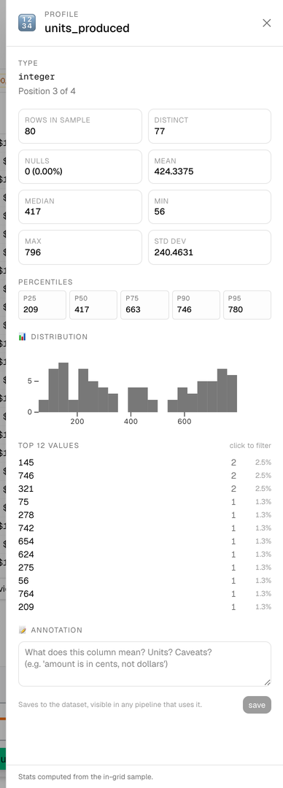
Graph view and the canvas minimap
When you switch to 🕸 Graph view, the canvas shows your pipeline as a true DAG. A small minimap appears in the top-right corner, letting you navigate large pipelines at a glance. Pan with middle-click or right-click (not left-click, which selects nodes). Zoom with the toolbar buttons or your scroll wheel. Double-click a sub-pipeline node to open its source pipeline in a new tab.
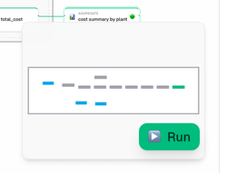
04Settings
Server-side preferences, appearance, AI, JDBC drivers, webhooks, step packs, and boot-time configuration.
Settings overview
DIG's configuration is split into 14 panels, navigable via the sidebar search. Most settings persist to ~/.config/dig/config.json and survive restarts. Some (marked below) require a restart to take effect.
| Panel | What it controls | Notes |
|---|---|---|
| Appearance | Theme (System, Light, Dark) and motion preferences | Per-browser; respects OS "reduce motion" setting |
| Expertise mode | Beginner, Builder, or Engineer — UI complexity level | Auto-promotes to Builder after 100 actions. Unlocks Live SQL, lineage, raw JSON in Engineer mode |
| Browser preview | DuckDB-WASM live grid: auto-recompute toggle and sample size | Lower sample size = snappier grid; higher = more representative. Options: 10K to 1M rows |
| Storage & paths | Input directory, Output directory, Run history retention (days) | Input defaults to data/inputs/; output to data/outputs/<run-id> |
| Performance | Default sample rows, Default preview row limit, Max concurrent runs, DuckDB threads, Log level, auto-detect toggles | DuckDB threads defaults to 0 (auto). Max concurrent runs should match CPU cores |
| Server & TLS | Log directory, Log file size limit, Log rotations kept, HTTPS enabled, auto-trust, API & web HTTPS ports | Boot-time: requires restart. TLS proxy forwards HTTPS (ports 8443 API, 3443 web) to HTTP ports (8190, 3100) |
| AI assistant | Enable AI assistant, AI provider, Allow non-local AI providers, Endpoint URL, Model, API key, Max output tokens, Temperature, Ping interval | Default: OFF. Local Ollama recommended (privacy). OpenAI-compatible endpoints for Anthropic, OpenAI, Groq. Non-local access gated by UI toggle |
| JDBC drivers | Register and manage JDBC driver JARs and classes | Upload into DIG's library (recommended) or reference a server path. Test connection before saving |
| Global webhooks | URLs that fire on every pipeline's terminal status | Trigger on: always, succeeded, failed, or step-triggered. Optional HMAC signing |
| Step Packs | Install and remove .dpack bundles | Add third-party or custom step plugins. Manage versions and dependencies |
| Notifications | System and runtime event log | Run start, completion, errors, warnings |
| Notification rules | Trigger rules mapping events to notifications | Create conditions to fire webhooks, emails, or in-app alerts |
| Security & API | Authentication tokens, API endpoints, permissions | DIG_AUTH_TOKEN required for non-loopback exposure |
| About | Version info, license, external links | Read-only |
Browser preview — DuckDB-WASM sample size
The live grid recomputes as you edit, powered by DuckDB running in your browser. Sample size controls how many rows the in-browser engine scans — the options are 10,000 | 50,000 | 100,000 | 500,000 | 1,000,000.
Lower samples (10K–50K) keep the grid responsive on slower machines and dense datasets. Higher samples (500K–1M) show more representative data but trade latency. For development, 100K is a practical middle ground. Toggle Auto-recompute on every edit off on very slow machines to only run the grid when you explicitly click.
Server & TLS — ports and HTTPS setup
DIG serves both HTTP and HTTPS automatically. The backend runs on HTTP ports (API: 8190, Web: 3100) and an optional TLS proxy terminates HTTPS on separate ports (API: 8443, Web: 3443), forwarding decrypted traffic back to the HTTP ports.
Boot-time settings (require restart):
Log directory— where rotating log streams live. Defaults to/var/log/DIG(Unix); falls back to~/Library/Logs/DIG(macOS) or~/.local/state/DIG/logs(Linux) if sudo is declined.Log file size limit (bytes)— per-stream rotation threshold. Default 10 MB; logs roll from.log→.log.1→.log.2, etc.Log rotations kept— how many rolled files to retain per stream. Default 5, meaning up to 50 MB history per stream.HTTPS enabled— when on (default), the TLS proxy runs alongside HTTP. When off, onlyhttp://is available.Auto-install cert in system trust store— on first start, prompts for sudo to install the self-signed cert into the system keychain. Happens exactly once; re-trigger with./scripts/dig_tls.py trust.API HTTPS portandWeb HTTPS port— ports the TLS proxy listens on. Defaults 8443 (API) and 3443 (Web).
AI assistant — local and cloud providers
Default: disabled. When enabled, DIG offers natural-language help for pipeline editing: explain a column, fix an expression, or generate a connector.
Local (recommended): Run Ollama on your machine. No API key, data stays private. Setup:
- Install and start Ollama.
macOS:
brew install ollamathenollama serve. Linux / Windows: see ollama.com/download. - Pull a model.
Example:
ollama pull gemma4:e4b(~7 GB, recommended). Orollama pull gemma3:4b(~3 GB, edge-optimized). - Configure DIG.
Set
AI provider=local,Endpoint URL=http://localhost:11434/v1(Ollama's default),Model= your chosen model, then toggleEnable AI assistanton. - Test connection.
Click the Test connection button; a green check means the LLM is reachable.
Cloud / OpenAI-compatible: For Anthropic, OpenAI, Groq, or OpenRouter, set AI provider = openai_compat, paste your API key into API key, and point Endpoint URL at the provider:
- Anthropic:
https://api.anthropic.com/v1(model:claude-haiku-4-5) - OpenAI:
https://api.openai.com/v1(model:gpt-4o-mini) - Groq:
https://api.groq.com/openai/v1(model:llama-3.1-70b-versatile)
Data access control: By default, Allow non-local AI providers is OFF, so only 127.0.0.1 (localhost) endpoints are reachable — your pipeline data never leaves the box. Turn the toggle ON to permit cloud APIs and LAN hosts (e.g., Ollama on another machine). Link-local and cloud-metadata addresses stay blocked regardless; only set DIG_AI_ALLOW_PRIVATE=1 if you have an internal trusted model host.
Optional tuning: Max output tokens (default 4096), Temperature (default 0.0 for deterministic code generation), and Ping interval (in seconds, to keep local models warm).
JDBC drivers — managed library vs. path reference
Register a driver JAR and class once, then pipelines using the jdbc connector or export_to_jdbc step pick from the list instead of typing paths. Two modes:
Upload (recommended): Copy the JAR into DIG's managed library (data/jdbc-drivers/). It travels with your DIG state during backup or migration, and you never expose a filesystem path.
Reference (advanced): Point at a JAR already on the server (e.g., a shared network mount). The path is not copied, so the operator owns keeping it available.
For each driver, record:
- Display name — human label (e.g., "Oracle 19c")
- Driver class — JDBC class name (e.g.,
oracle.jdbc.OracleDriver) - Driver JAR — upload a .jar or reference a filesystem path
- URL template (optional) — example JDBC URL the UI pre-fills (e.g.,
jdbc:oracle:thin:@//<host>:1521/<service>) - Notes (optional) — compatibility info
After adding a driver, use Test connection to verify the JAR loads and (optionally) try a real connection with a test URL and credentials. The test URL and creds are never saved — they're ad-hoc and only used to validate the driver works before it's used in a pipeline.
Step Packs — install plugin bundles
DIG's core steps can be extended with .dpack bundles — packages of custom steps, connectors, or templates. Install a pack to add new affordances to the pipeline editor. Uninstall to clean up unused plugins. Each pack declares its dependencies and versions; DIG auto-installs Python requirements by default (set DIG_PACK_AUTO_INSTALL_DEPS=0 to manage them manually).
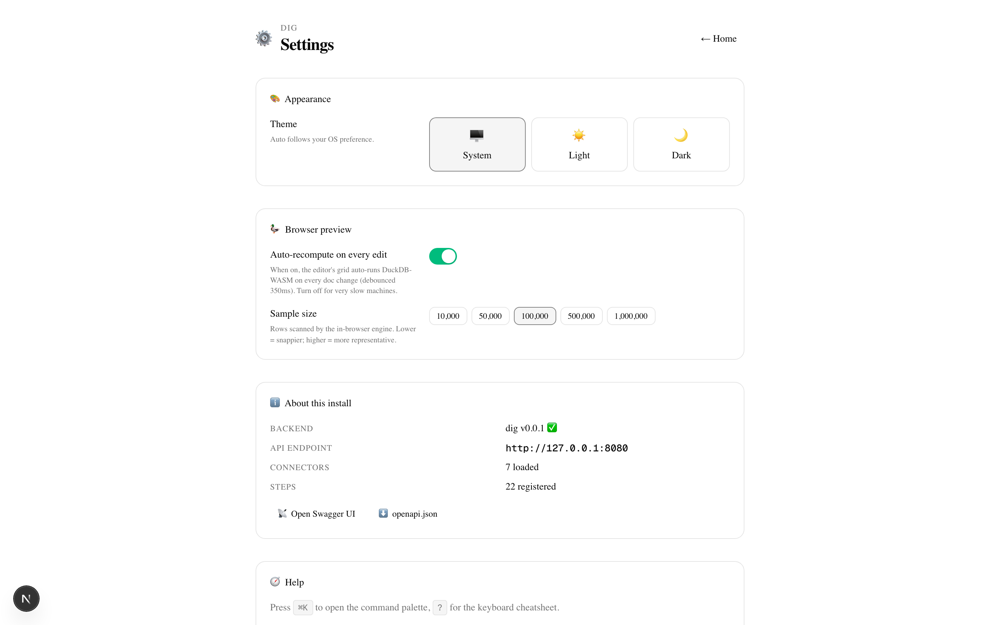
~/.config/dig/config.json by scripts/dig-start.sh before the API starts. Runtime settings (AI, Storage, Performance, etc.) live in DIG's SQLite metadata database. Environment variables (e.g., DIG_AUTH_TOKEN, DIG_API_PORT) override both. See docs/CONFIG.md for the full reference.
05Data ingestion
Import files and external sources — DIG profiles every column as data lands.
Two ways data enters DIG
DIG handles both direct file uploads and references to files without copying them — your data stays yours.
Drag-and-drop upload
Drop a file onto the Datasets page. DIG copies it into your local ~/.local/share/dig/ folder and profiles every column.
Reference external data
Input data is sacred. Reference a file on disk, a remote URL, or a database query without copying. DIG reads it fresh on every pipeline run.
20 connectors across five families
DIG ships five families of connectors, grouped by data origin. Pick a format or system, and DIG handles the ingestion — type and meta-type detection runs on ingest.
| Family | Connectors | Notes |
|---|---|---|
| Text | csv · excel · json · parquet · feather |
CSV auto-detects delimiters (.dat, .data, .tab, .psv). Excel reads multi-sheet files and auto-detects data islands. |
| Scientific binary [science] | numpy · hdf5 · matlab · netcdf · fits |
Optional extra (pip install -e .[science]). Read .npy, .npz, .h5, .mat, .nc, .fits directly. |
| Network + database | https · rest_api · sqlite · postgres · mysql · jdbc |
rest_api supports auth, JSONPath extraction, and pagination. jdbc connects to Oracle, MS SQL Server, Snowflake, DB2, Teradata, and others — see JDBC setup guide. |
| Warehouse & reverse-ETL | snowflake · bigquery · sheets · dbt |
Write-only sinks via export_to_db. To read from Snowflake or BigQuery, use jdbc or a warehouse query URI. |
Automatic type detection and profiling
When you ingest a dataset, DIG profiles every column and detects its data type. The system recognizes 29 data typesstring, integer, double, boolean, date, datetime) and 23 meta-types that describe what values mean — coordinates (geographic, polar, Cartesian), currency with exact decimal arithmetic, UUID, email, URL, IP address, color, phone number, timezone, scientific notation, vectors, JSON, and more.
The profile shows per-column statistics (null fraction, distinct count, min/max, top values, distribution) and drives the auto-detection of meta-types. A column that looks like geographic coordinates, email addresses, or currency is labeled accordingly — even when stored as plain strings or numbers. You can always override the auto-detection from the column menu (⋯ → 🔄 Cast to…).
Sampling for live preview
The pipeline editor renders a live preview on a sample of your data — not the full dataset. This keeps the editor snappy. Pick how that sample is drawn from the toolbar's 🧪 sampling button:
- 🔝 Head — first N rows (default, fastest, same as SQL LIMIT).
- 🔚 Tail — last N rows (for time-series "most recent" inspection).
- 🎲 Random — uniform random sample with optional reproducibility seed (best for representative previews).
- 📐 Systematic — every Nth row, preserves ordering trends across the dataset.
The sampling setting travels with the pipeline (saved in the document) so each workflow can use a different method. Full-data backend runs always use 100% of your data, regardless of preview sampling.
Add a dataset
-
Open the Datasets page.
Click Datasets in the sidebar (or use keyboard shortcut g d) to see all imported data.
-
Drag a file or click to upload.
Drop a file onto the page, or click the upload button. Supported formats: CSV, Excel, JSON, Parquet, Feather, SQLite, and scientific binaries (NumPy, HDF5, MATLAB, NetCDF, FITS if the
[science]extra is installed). -
Or add a reference to external data.
Click Add dataset and choose a connector — HTTPS URL, REST API with auth, Postgres, MySQL, JDBC, Snowflake, BigQuery, Google Sheets, or dbt models. Enter the connection details and DIG fetches rows on demand, no copy stored locally.
-
Review the profile.
DIG shows the column list with detected types, null counts, and top values. Click a column header to expand its full statistics (distribution, distinct values, sample rows). Toggle between 🔄 Cast to… to override any auto-detection.
-
Create a pipeline or add to an existing one.
Click New pipeline (or add to an existing pipeline from the Pipelines page) to start transforming. Your dataset appears as the first input node.
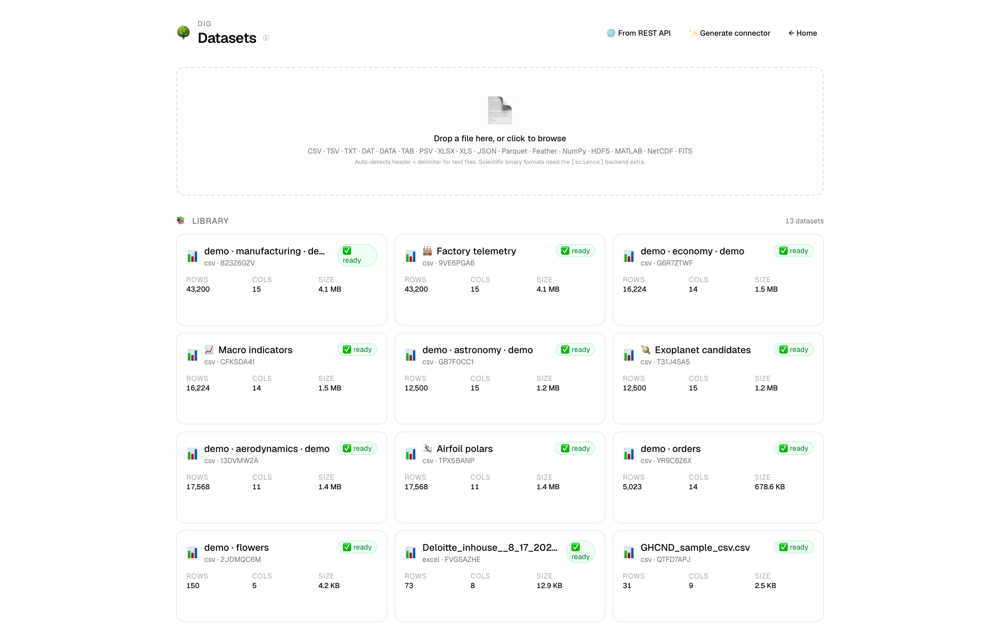
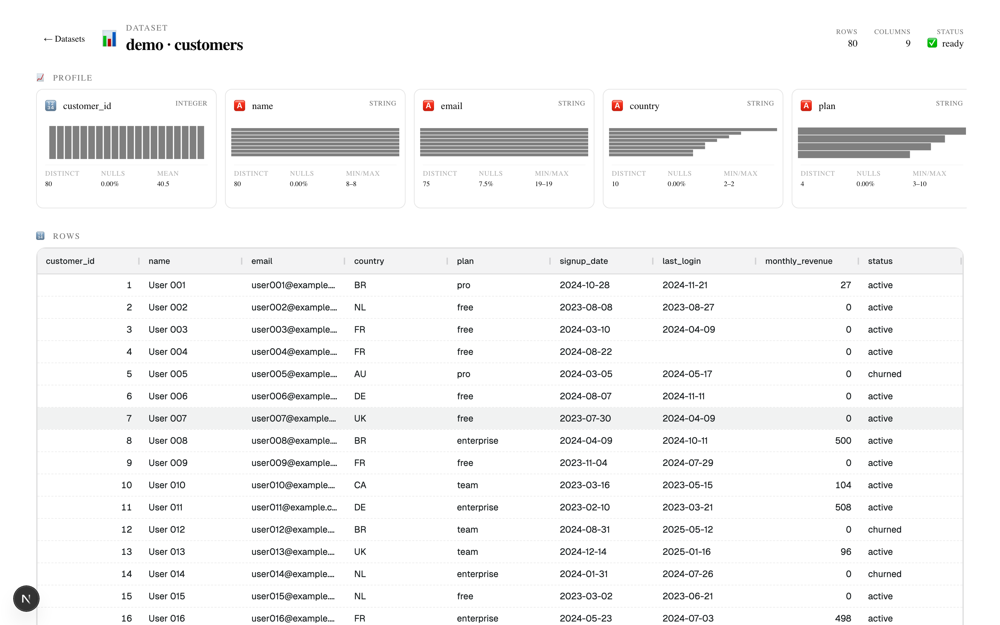
06Data manipulation
Shape, clean, derive, combine, aggregate, analyze, and validate with 62 built-in steps across 11 categories. Undo any change with ⌘Z.
The mental model
Every column transformation — selecting, casting, filtering, computing, combining — becomes a step. Steps chain left-to-right in the editor's strip; data flows through them. Each step is undoable: press ⌘Z to rewind any action back through the entire run history. This means you can experiment fearlessly — add a step to explore, then undo if it doesn't lead anywhere.
The step library — 11 categories
DIG ships 62 built-in steps organised by what they do. The 6 bundled packs extend the library with specialized, domain-specific steps for time-series, statistics, business charts, and more — adding 40+ installable steps (§10), for roughly 100 once every pack is enabled.
| Category | Emoji | For what | Key steps (sample) |
|---|---|---|---|
| Shape | ✂️ | Select, reorder, rename, filter, sort, split, flatten, unnest, pack, unpack, transpose, invert | Select columns, Filter rows, Sort rows, Split column, Pack into struct, Unnest array, Matrix transpose |
| Clean | 🧹 | Type conversion, whitespace trimming, deduplication, text substitution, binning, column coalescing | Cast type, Clean whitespace, Deduplicate, Replace text, Bin numeric, Coalesce columns |
| Derive | ➕ | Add computed columns: SQL expressions, math, dates, strings, coordinates, text embeddings, ML vectors | Derive column, Add runtime column, Math equation, Extract date parts, Convert coordinates, Rolling window, PCA, K-Means, DBSCAN, Forecast, Seasonal decompose |
| Combine | 🔗 | Join two inputs by matching keys; stack datasets; embed sub-pipelines | Join, Union, Sub-pipeline |
| Aggregate | 📊 | Group & summarise; pivot; time-bucket; window functions; resample | Group & aggregate, Pivot wider, Pivot longer, Resample (time bucket aggregate), Window aggregate |
| Analyze | 🔬 | Correlation is built-in; the hypothesis tests & time-series diagnostics ship in the stats_pro and time_series_pro packs (§10). | correlation_matrix, t_test, anova, chi_square, anomaly_zscore, changepoint_detection |
| Model | 🧠 | Clustering, regression, dimensionality reduction, forecasting, decomposition | K-Means clustering, DBSCAN clustering, PCA (dimensionality reduction), Forecast (time-series), Seasonal decomposition, Linear regression, t-SNE (2-D embedding), UMAP (2-D embedding) |
| Validate | ✅ | Data quality rules: uniqueness, nullness, ranges, regex patterns, row counts | Data quality expectations |
| Visualize | 📈 | Charts, maps, heatmaps, gauge; export as PNG/SVG or interactive HTML | Export to image, Export to map, Pareto chart, Funnel chart, Waterfall chart |
| Output | 📤 | Write to file (CSV, Parquet, Excel, JSON, NDJSON), database, JDBC sink, webhooks | Export to file, Export to database, Export to JDBC, Trigger webhook |
| Custom | 🧩 | Identity placeholder; sub-pipelines published as reusable steps | Passthrough |
Joins: Combining two datasets by matching keys
A join matches rows from two inputs — a dataset, an upstream step, or both — using one or more key columns. The Join step's panel is hand-built to surface the row-count consequences before you commit.
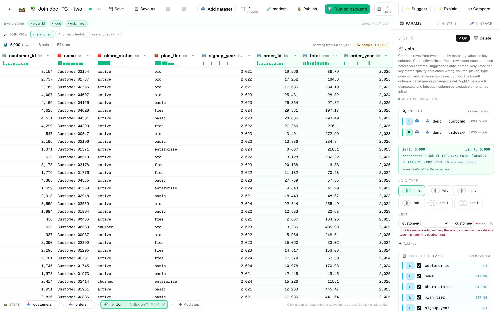
Join type (cardinality)
Six join types control which rows survive:
- Inner — matching rows only.
- Left — keep all rows from the left input; right rows that don't match become NULLs.
- Right — keep all rows from the right input; left rows that don't match become NULLs.
- Full — keep both sides' rows (outer join). Unmatched pairs get NULLs.
- Anti-left — rows on the left WITHOUT a matching right row (useful for 'find unmatched').
- Anti-right — mirror of anti-left.
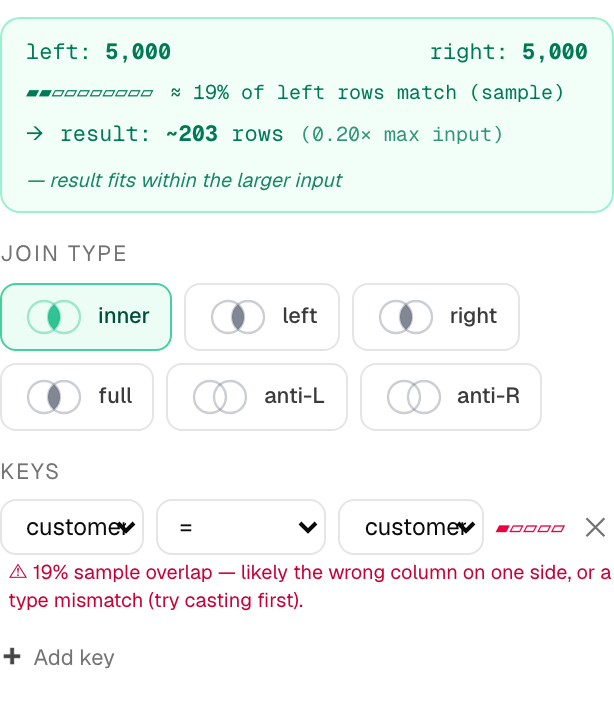
Key pairs
For each key pair [left column] [op] [right column], the panel shows:
- Column — the column name from each side.
- Op —
=(equality, most common), or</<=/>/>=for range joins. - Match-quality bar — green (high overlap) to rose (low overlap) on the sample. Click to see the overlap percentage inline.
- Remove (✕) — delete the key pair.
Equality keys (op = =) collapse in the output: the right side is dropped because its values are always identical to the left. Range-key pairs carry both sides.
Result columns
At the bottom, a grid shows every output column with provenance chips (L for left, R for right, C for coalesced). You can exclude columns (checkbox) or rename them inline. Provenance identifiers are stable — your renames and exclusions survive changes to the join kind, suffix rules, or collision strategy.
Variables: Substitution in URIs and cell content
Pipelines support {{ variable }} templating in three places: dataset URIs (to parameterise input paths), output-sink URIs (to date-stamp exports), and cell values via Add runtime column.
Built-in variables
Example: Dated output folder
Sink URI: file://exports/{{ pipeline_name }}/{{ year }}/{{ month }}/{{ day }}/{{ utime | replace(':', '-') }}.parquet
Rendered: file://exports/customer-overview/2026/05/11/14-23-07.parquet
Filters
upper— ASCII uppercase.lower— ASCII lowercase.strftime('fmt')— reformat dates, e.g.{{ today | strftime('%Y/%m/%d') }}.replace('old', 'new')— substring replace.default('value')— fallback when variable is missing.slug— filesystem-safe lowercase slug.safe— path-safety check (rejects traversal, forbidden chars).
Sub-pipelines: Publish a pipeline as a reusable step
Any pipeline can be published as a step and installed in other pipelines. The published pipeline becomes a single node in the consumer's strip; at compile time, DIG inlines it into the flat DAG.
Publishing
In the editor toolbar, click 🪆 Publish. Fill in:
- Step label — the name consumers see in the picker.
- Emoji — the icon (defaults to 🪆).
- Description — one-sentence explanation.
- Category — ✂️ Shape, 🧹 Clean, ➕ Derive, 📊 Aggregate, 🔗 Combine, 🔬 Analyze, 🧠 Model, ✅ Validate, 📈 Visualize, 🧩 Custom.
Once published, every other pipeline's step picker shows the new pipeline: entry tinted emerald, and a synthesised manifest is exposed at GET /steps/pipeline:.
Pinned versions
When you install a sub-pipeline step, the parent records a specific source version (pinnedEtag). The parent's behaviour is locked until you explicitly click ⬆ Upgrade. Three pin states:
- Up to date with source. — pinned etag matches the source's live version.
- n versions behind source (v
). — source has advanced; click ⬆ to bump. - Source pipeline unavailable. — the source was deleted; remove this node or republish a replacement.
Exposed parameters
Most reusable sub-pipelines need a few knobs. Open any node in your source pipeline → params panel → each param's row has a 🪆 expose pill:
- Default (grey) — param is hidden from consumers.
- Click once (violet) — param is exposed with a consumer-facing alias. Defaults to the param key.
- Click again — unexpose; the alias is dropped.
Consumers see the exposed aliases as regular params on the step; their values flow into the inner nodes at inline-expansion time.
Cycle detection
DIG automatically detects and blocks circular references. When you save or start a run, the system checks whether any sub-pipeline references create a loop (direct or transitive). If so, you get a clear error with the offending chain. The picker also blocks self-cycles immediately with a 7-second toast.
Hints: One-click rule-based composites
Hints are AI-suggested step sequences that you can apply in one click. They recognize common patterns — like raw latitude/longitude columns — and bundle the right steps together. For example, the (lat, lon) → pack & cast hint detects a pair of lat/lon columns and suggests packing them into a struct, then casting to a geographic type so downstream steps can use them as a single geographic column.
When DIG detects a pattern matching a known hint in your current dataset, a suggestion appears in the sidebar. Click Apply to insert the composite, or Apply as branch to try it on a fork of your current pipeline without modifying your working version.
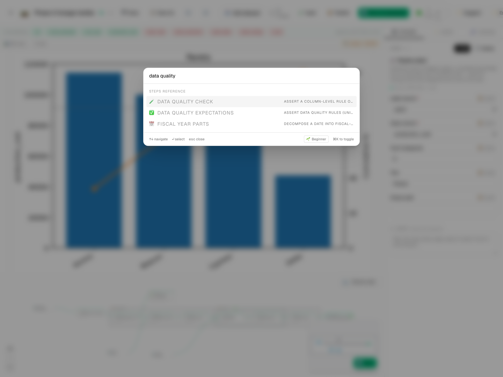
07Data visualization
Render charts and maps as production artifacts—explore patterns with matplotlib + seaborn, or geospatial layers via Leaflet.
Charts via export_to_image
The export_to_image step renders static, publication-grade charts to PNG or SVG using matplotlib + seaborn. Feed it one to three numeric or categorical columns, pick a chart kind, and DIG outputs an image artifact you can embed in reports, dashboards, or presentations.
The kind parameter selects your chart type. With kind = "auto", DIG inspects your columns and picks sensibly: one numeric column → histogram, one categorical → bar chart, two numerics → scatter, and so on.
| Chart kind | What it shows | Required columns |
|---|---|---|
histogram | Distribution of one numeric variable, binned automatically | x (numeric) |
density | Smoothed distribution via kernel-density estimation | x (numeric) |
box / violin | Spread and quartiles per group | x (categorical or numeric) ± hue |
bar_counts | Bar height = row count per category | x (categorical) |
stacked_bar | Bars divided by a second category | x (categorical) + hue (categorical) |
percent_stacked_bar | Stacked bars normalized to 100% | x (categorical) + hue (categorical) |
scatter | Points in 2-D space | x + y (both numeric) ± hue |
line | Time series or ordinal trends | x (ordinal/date) + y2 (numeric) ± hue |
hexbin | 2-D density hexagons (scatter alternative for overplotting) | x + y3 (both numeric) |
heatmap | Color grid of cell values | x (categorical) + y4 (categorical) + value (numeric) |
scatter3d | Points in three-dimensional space | x, y5, z (all numeric) |
pair | Pairwise scatter grid across many numeric columns | columns (list of column names) |
joint | Scatter + marginal histograms on X and Y axes | x + y (both numeric) |
bubble | Scatter with bubble size encoding a fourth dimension | x + y (both numeric) + value (sets size) ± hue |
All kinds accept optional title, width, height, dpi, and hue (to color-group points or bars). Use max_points to sample down before rendering and keep 200k-row scatters fast.
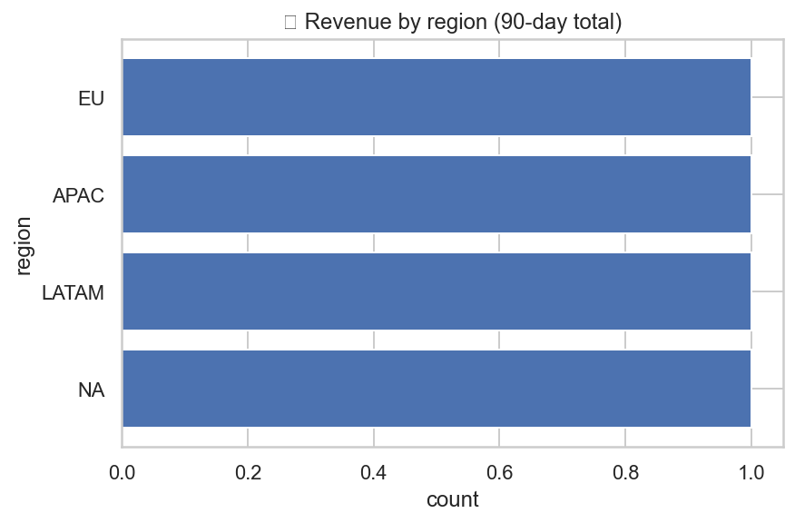
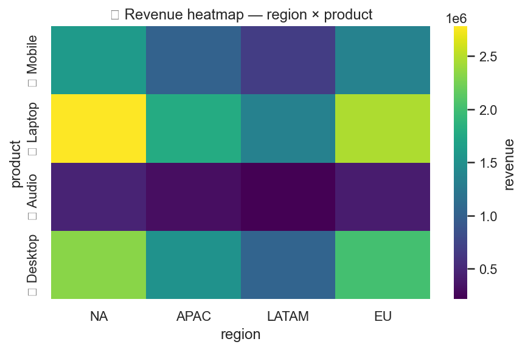
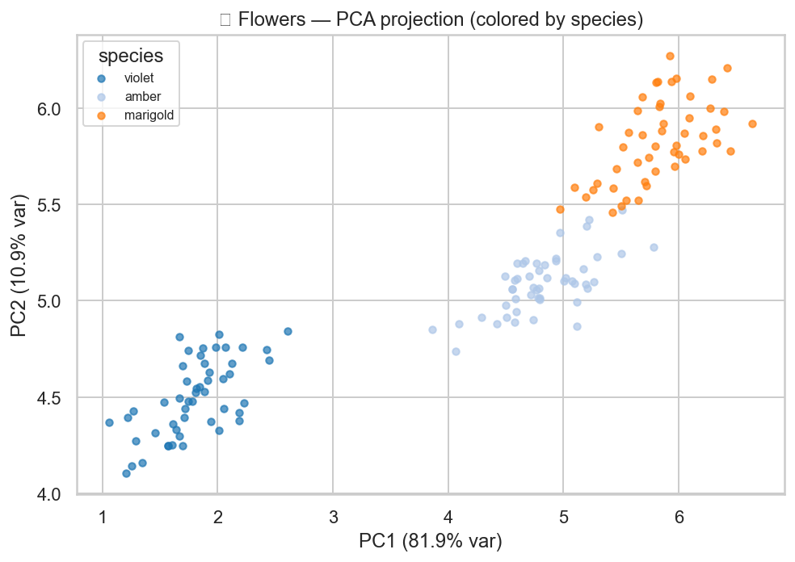
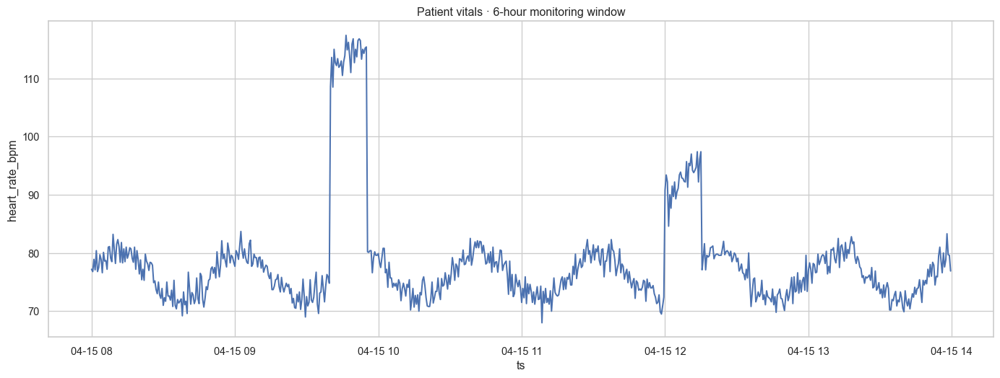
Maps via export_to_map
The export_to_map step renders lat/lon points, color-coded regions, kernel-density heatmaps, and arc routes using either interactive Leaflet HTML or static matplotlib PNG. Choose your visualization mode based on your data shape and what patterns you want to reveal.
Mode 1: Points markers (default)
One marker per row at a given latitude and longitude. Supports interactive tooltips with name and comment fields.
| Parameter | Required | Notes |
|---|---|---|
mode | ✓ | Set to "points" |
location | ✓ (unless separate_columns) | Column containing coordinates in chosen format |
lat_col, lon_col | ✓ (only if format=separate_columns) | Two separate numeric columns |
name_col | Tooltip headline (optional) | |
comment_col | Tooltip body (optional) | |
marker_color | CSS color hex, named color, or rgb() | |
tile_provider | osm · carto-light · carto-dark · esri-natgeo | |
format_out | html (interactive) or png (static) |
Mode 2: Choropleth (color-coded regions)
Color each polygon by a numeric value—perfect for state-by-state metrics, district-level metrics, or any region-level aggregation. Requires a geometry column holding WKT-string or WKB-encoded polygon boundaries.
| Parameter | Required | Notes |
|---|---|---|
mode | ✓ | Set to "choropleth" |
geometry_col | ✓ | Column holding WKB or WKT polygons |
value_col | ✓ | Numeric column that drives the color ramp |
name_col | Tooltip headline per region (optional) | |
color_scale | viridis · magma · cividis · plasma · Greens · Blues · Reds · OrRd · YlGnBu |
Each row must hold one complete, well-formed polygon per region (no leading whitespace, no MULTIPOLYGON splits). If you have tick-level geometry data, pre-aggregate upstream.
Mode 3: Heat (kernel-density heatmap)
Build a smoothed density overlay from lat/lon points—lighter than 10k+ individual markers. Optionally weight each point by a column.
| Parameter | Required | Notes |
|---|---|---|
mode | ✓ | Set to "heat" |
location (or lat_col+lon_col) | ✓ | Same lat/lon formats as points mode |
value_col | Optional: weight each point by this numeric column |
Mode 4: Arc (origin → destination)
Draw curved lines on a globe connecting origin and destination coordinates. Useful for flight routes, shipment lanes, migration flows, or supply-chain visualization.
| Parameter | Required | Notes |
|---|---|---|
mode | ✓ | Set to "arc" |
origin_lat_col, origin_lon_col | ✓ | Start point coordinates |
dest_lat_col, dest_lon_col | ✓ | End point coordinates |
Each row must have all four coordinates—no aggregation possible. Error messages guide you if columns are missing.
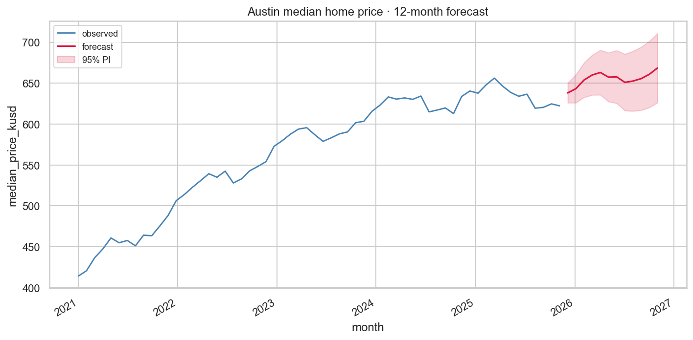
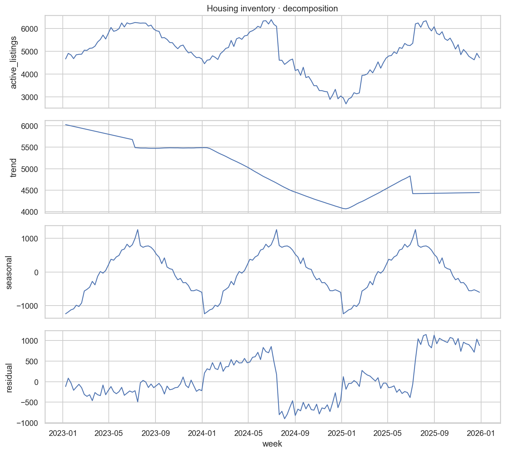
Where charts appear
When you focus a visualization step in the editor, DIG renders a preview in the step card—no manual "run" needed. Zoom in to inspect the chart, then export it as a PNG or HTML artifact that lands in your run directory under data/outputs/<run_id>/<step_name>.png (or .html for interactive maps). Use the path parameter to write to a custom location.
08Storing results & data output
Write artifacts to disk, database, or image; version your pipeline checkpoints; trace column lineage across your workspace.
First-class outputs: the Run
Every pipeline run writes Parquet by default to the run's output folder. To add extra sinks—spreadsheets, databases, charts—connect output steps to the final node and run once. All artifacts land in a single run folder.
export_to_file
CSV, Parquet, Excel, JSON, NDJSON — pick the format that fits your audience and downstream tool.
export_to_db
Write directly to SQLite, Postgres, or MySQL with schema control (append, replace, fail).
export_to_image
Matplotlib + seaborn charts: PNG or SVG. Pick a kind (bar, scatter, heatmap, line, 3D) and fill the axes.
export_to_file formats
Each format makes a different trade-off between human-readability, file size, and downstream tooling.
| Format | Pros | Cons | Use when |
|---|---|---|---|
csv | Universal, opens anywhere, human-readable | No types, large files, no nesting | Sharing with humans or spreadsheets |
parquet | Columnar, typed, zstd-compressed, fast | Needs a parquet reader | Feeding another data tool or long-term storage |
excel | Non-technical stakeholders understand it | ~1M row limit, slow on large data | Executive / finance handoffs |
json | Preserves nested structure | Bulky, no compression | API mocks, document stores |
ndjson | Line-streamable, append-friendly | Bulky | Logs, queue feeds, streaming consumers |
# Export to CSV { "step": "export_to_file", "params": { "format": "csv", "path": "active-customers.csv" } }
Path tip: paths are relative to the run output dir (data/outputs/<run_id>/). Use absolute paths only when you intentionally want to write outside that—e.g. into a mounted share. To enable absolute paths, set DIG_EXPORT_ALLOW_ABSOLUTE=1 in the operator config.
export_to_db to your warehouse
Drop the final dataframe into a SQL table—SQLite for local work, Postgres or MySQL for production.
# SQLite example { "step": "export_to_db", "params": { "uri": "sqlite:///data/local.db", "table": "customers_clean", "if_exists": "replace" } }
if_exists | Behavior |
|---|---|
append | Add rows; fails if schemas don't match |
replace | Drop and re-create the table |
fail | Error if table exists (safest for one-shot loads) |
...://user:***@host), so screenshots can be shared without leaking passwords.export_to_image: charts ready to share
Render publication-grade charts via matplotlib + seaborn. No web bundle—just deterministic PNG or SVG you paste into slides or embed in reports.
# Bar chart: customer count by region { "step": "export_to_image", "params": { "kind": "bar_counts", "x": "region", "title": "💰 Revenue by region", "format": "png" } }
Set kind to pick a chart type: auto (guesses from your columns), histogram, density, box, violin, bar_counts, stacked_bar, percent_stacked_bar, scatter, line, hexbin, heatmap, scatter3d, pair, joint, or bubble. Then fill the required axes: single-axis charts need x; scatter and line need x + y2; heatmap needs x + y4 + value. Optional: hue (colors by group), title, width, height, dpi, max_points (for large datasets).
Saving & checkpoints
DIG keeps your work safe by splitting saves into two buckets: autosaves (transient, crash recovery) and labelled saves (checkpoints you intend to keep).
Click 💾 Save (keyboard: ⌘S or Ctrl-S) to open a dialog with an optional label—e.g. "before adding rolling-window step". The label is shown in run history and your labelled saves are never evicted by autosaves. Even an empty label creates a locked checkpoint.
📋 Save As (keyboard: ⌘⇧S or Ctrl-Shift-S) clones the entire pipeline—datasets, nodes, params, metadata—into a new pipeline with its own fresh id and independent history. Useful for branching experiments.
The Runs list & detail
Every time you execute a run, DIG snapshots the pipeline state and logs all outputs, metrics, and artifacts.
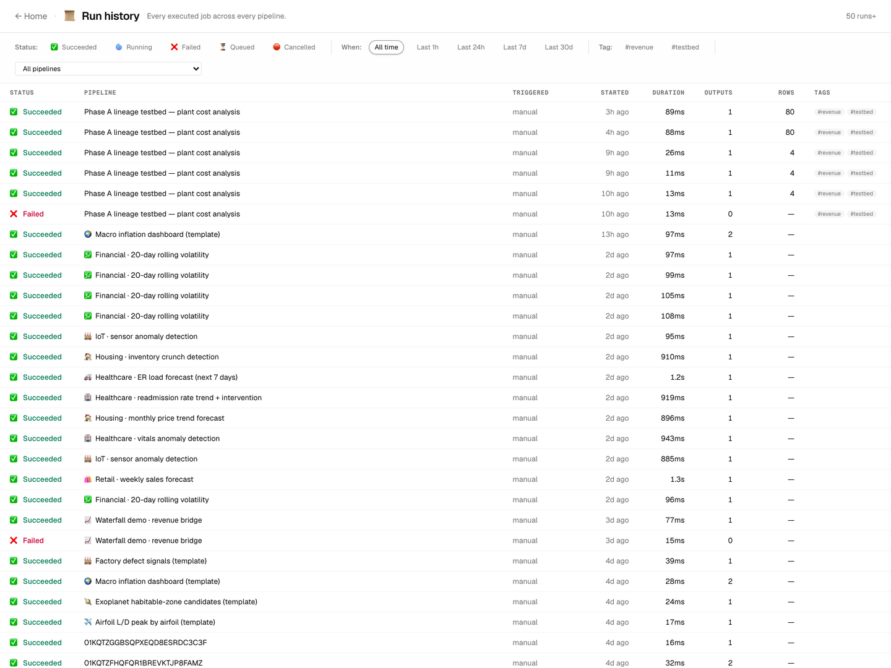
Click any run to open the detail view. Here you see all outputs, per-node metrics, artifacts (PNGs, Parquets), and if something failed, the exact node and error message.
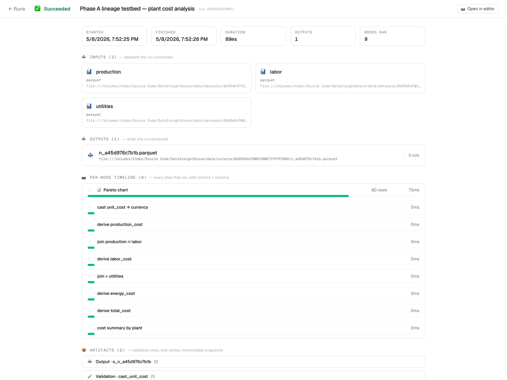
Catalog & lineage: trace column flow
DIG tracks column origins at three zoom levels. Pick the view that answers your question.
| Zoom level | View | Use when |
|---|---|---|
| Workspace | Catalog | "Which pipelines feed which datasets?" |
| Pipeline | Sankey | "Which steps and columns flow into this terminal?" |
| Column | Column DNA | "Which upstream values shaped this single output column?" |
The Catalog — workspace-wide view
Open the Catalog from the workspace menu. Nodes are pipelines; edges are datasets. Each edge is labelled with the dataset name and (when the schema is registered) the number of columns flowing through.
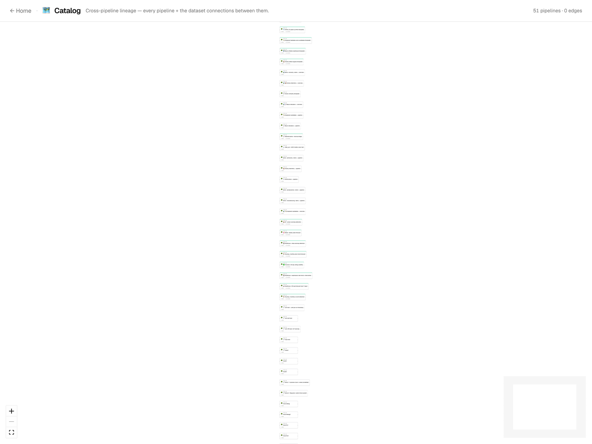
Click an edge or node to open a detail panel showing the payload (columns, schema). Tags (set in the editor toolbar) appear as a chip strip above the canvas—click any tag to filter pipelines by intersection.
Sankey — pipeline-scoped flow
Inside the editor, switch to the Sankey tab to see the active pipeline as a column-by-column flow diagram. Bands widen with row count; hover any band to see which input column it came from. The selection state is shared with the canvas: clicking a band highlights the step in the strip, and vice versa.
Column DNA — the bipartite walk
Open the Column DNA drawer (right-hand panel) to answer the focused question: what made this single column? The bipartite layout pairs columns on the left with the steps that produced them on the right, with arrows showing the per-column dependency.
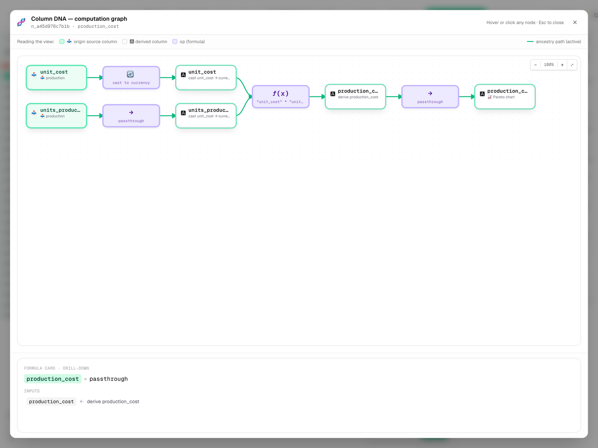
Toggle the walk direction: upstream (what shaped this column) or downstream (which columns inherit from it). Use downstream before renaming a column—it shows "what will I break?" at a glance.
The impact badge
When you rename, drop, or recast a column in the editor, an amber impact badge appears next to the affected node. It counts the downstream columns that inherit from the change and links straight to Column DNA with the walk pre-loaded—covering both direct references and transitive ones through joins, aggregates, and CTEs.
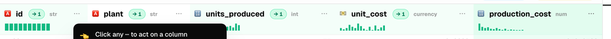
09Worked examples
Six end-to-end walkthroughs, each chosen to show off a different best-of-class feature. Every step name is real — open DIG alongside and follow along.
Example 1: Customer churn risk score
Goal: Start from a raw customer table, compute a per-customer churn risk score, group it by plan, and render a chart.
- Import the dataset.
Datasets → Import, drop
customers-demo.csv. The profile generates and you'll see histograms above each column header. - New pipeline.
Pipelines → ➕ New pipeline. Name it
Churn risk by plan. - Add
cast_typeforlast_login.The CSV reads it as a string; cast to date. Connect to the dataset and set Column:
last_login, Target type:date. - Add
derive_column—days_since_login.Connect downstream of the cast. Set Name:
days_since_login, Expression:DATE_DIFF('day', last_login, CURRENT_DATE). - Add
derive_column—churn_risk.Connect after the previous derive. Set Name:
churn_risk, Expression:(CASE WHEN status <> 'active' THEN 40 ELSE 0 END) + (CASE WHEN days_since_login > 30 THEN 30 ELSE 0 END) + (CASE WHEN monthly_revenue = 0 THEN 20 ELSE 0 END) + (CASE WHEN plan = 'free' THEN 10 ELSE 0 END). Click the column header after the live preview updates — the inline sparkline shows a bimodal distribution. - Add
expectationsstep.This is the data-quality gate. Connect after the derive. Set Assertions:
churn_risk >= 0 AND churn_risk <= 100(sanity) andcustomer_id IS NOT NULL. - Add
group_aggregate.Connect downstream. Set By:
plan, Aggregations:customer_id · count · alias n_customers,churn_risk · mean · alias avg_risk,churn_risk · max · alias max_risk. - Add
export_to_image.Connect from the aggregate. Set Chart kind:
bar_counts, X column:plan, Y column:avg_risk, Title:Average churn risk by plan. - Add an output
Point it at the image step.
- ▶️ Run on backend.
When the run finishes, the artifacts panel shows the bar chart.
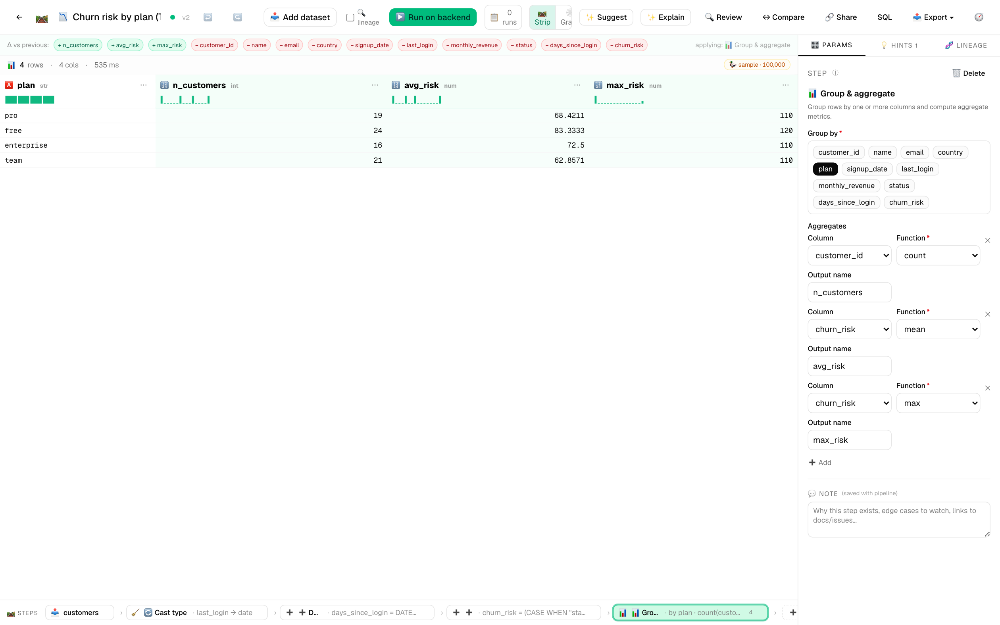
Example 2: Geospatial customer mapping
Goal: Join customers to cities, build a geographic column from latitude/longitude, compute distances from each customer to San Francisco, and bucket customers by distance.
- New pipeline:
Create a pipeline named
Customer distance from SF. - Join customers ← cities.
Add the customers dataset, then add a
joinstep. Set Left tocustomers-demo, Right tocities-demo, Type toleft, and On tocountry = country. (Note: customers uses UK; cities uses GB — the join will miss those rows. This is a real-data lesson.) - Inspect the joined preview.
Right-click the new
latitudecolumn header → 🔗 Trace lineage to confirm it came from cities-demo. - Smart-pick: pack & cast to geographic.
In the hints panel, click the composite card that suggests
pack_struct+cast_type. DIG inserts both steps at once, creating a newcustomer_locationcolumn with the 🌍 geographic icon. - Add
geo_distancestep.Set From column to
customer_location, To column to literalPOINT(-122.4194 37.7749)(San Francisco), Output column todistance_km_from_sf, and Unit tokilometers. - Add
bin_numericstep.Set Column to
distance_km_from_sf, Bins to0,500,2000,8000,Infinity, Labels tosame-city, regional, continental, intercontinental, and Output column todistance_bucket. - Add
group_aggregatestep.Set By to
distance_bucket. Add two aggregations:customer_id·count· aliasn_customers, andmonthly_revenue·sum· aliastotal_revenue. - Add
export_to_imagestep.Choose Bar chart, set x-axis to
distance_bucket, y-axis tototal_revenue, and title toRevenue by distance from SF. - ▶️ Run on backend.
The chart appears in artifacts as a PNG.
pack_struct + cast_type to build a geographic column instantly. Once cast, every spatial operation (distance, buffer, contains) becomes a single-step add.Example 3: ML feature engineering & k-means clustering
Goal: Normalize the four numeric features, reduce to 2D with PCA, cluster with k-means, and visualize in a labeled scatter plot.
- Import
samples/flowers-demo.csv(150 rows, 4 numeric features: petal_length, petal_width, sepal_length, sepal_width; 1 categorical: species). - New pipeline:
Iris clustering. - Add four
cast_typesteps (or one composite) to ensure all four numeric columns read asdouble. Open the dataset profile to confirm; if any read as string, cast each using the smart-picks dropdown. - Normalize each numeric column to z-scores with four
derive_columnsteps. For each, use:Output names:(column - AVG(column) OVER ()) / NULLIF(STDDEV(column) OVER (), 0)
petal_length_z,petal_width_z,sepal_length_z,sepal_width_z. - Add
pcastep for dimensionality reduction:- Columns:
petal_length_z, petal_width_z, sepal_length_z, sepal_width_z - Components:
2 - Output prefix:
pc
pc_1andpc_2. Click each header—the inline sparkline shows the bimodal/trimodal structure that makes iris a textbook clustering case. - Columns:
- Add
kmeansstep:- Columns:
pc_1, pc_2 - K:
3(iris has 3 species) - Output column:
cluster
- Columns:
- Trace lineage on the
clustercolumn. Right-click theclusterheader → Trace lineage. The drawer shows a deep dependency stack:flowers-demo.csv→ numeric columns →cast_type→derive_column(z-scores) →pca(pc_1, pc_2) →kmeans(cluster). This is auditable end-to-end lineage on an ML pipeline. - Add
export_to_image:- Chart kind:
scatter - X column:
pc_1 - Y column:
pc_2 - Color by:
cluster - Title:
Iris clusters in PCA space
- Chart kind:
- Run on backend. The scatter plot appears in artifacts. Compare to ground-truth species—k-means typically nails the clean cluster (versicolor) and partially confuses the two overlapping ones (setosa / virginica).
- Add a second
group_aggregate(parallel branch from kmeans output):- By:
species, cluster - Aggregations:
*·count· aliasn
- By:
- Add a second
Outputnode pointing at the contingency table, then run on backend. Both artifacts appear: scatter plot and comparison table.
Example 4: Stock forecast & drift monitoring
Goal: Forecast 30 days of stock prices, schedule the pipeline daily, and use the distribution-diff overlay + AI review to monitor for prediction drift between consecutive runs.
- Import stock-demo.csv and create "Stock 30-day forecast" pipeline.
Use the Ingest action from the Home screen; give the pipeline the exact title.
- Add cast_type step.
Convert
dateto date type. (Open the Live SQL view to see theCAST("date" AS DATE)CTE — this maps visual operations to raw SQL.) - Add filter_rows step.
Predicate:
ticker = 'DIGX'. This isolates the synthetic ticker in the demo file; adapt for your own multi-ticker data. - Add sort_rows step.
Sort by
dateascending — required for the time-series forecast to read contiguous data. - Add forecast step.
Set Time column to
date, Value column toclose, Horizon to30, and toggle Confidence intervals on. The output addsforecast,lower_bound, andupper_boundcolumns; click each header to see the sparkline distribution grow wider as the horizon extends. - Add derive_column step to flag wide-uncertainty days.
Name:
is_uncertain. Expression:(upper_bound - lower_bound) > (forecast * 0.4). This tags days where the confidence interval exceeds 40% of the predicted value. - Add expectations step.
Insert two checks:
forecast IS NOT NULL OR date <= (SELECT MAX(date) FROM input)(forecasts only for future dates) andlower_bound <= forecast AND forecast <= upper_bound(interval sanity). - Add export_to_image step.
Chart kind:
line. X column:date. Y columns:close, forecast, lower_bound, upper_bound. Title:30-day forecast with 95% CI. This creates a multi-line plot with your historical and projected values. - Add an output pointing at the image step.
Name it
forecast_chartor use the default output name. - Run on backend.
Click ▶ Run. The chart renders with historical close prices and the forecast band.
- Open Schedules and create a new schedule.
Cron expression:
0 18 * * 1-5(6pm weekdays). Wire the pipeline and save. - Wait for at least 2 scheduled runs.
Manually trigger back-to-back runs if you want to see drift monitoring immediately. Each run writes a profile snapshot.
- Re-open the editor and look at the forecast column header.
Once a prior run's profile exists, the sparkline now shows a muted overlay — the previous run's distribution. If the model drifted significantly, a 🔴 drift badge appears.
- Hover the sparkline to inspect the drift.
The popover shows current vs previous distribution + a KL divergence number. Switch to Engineer mode (⌘⇧E) to see the raw KL value and unlock the per-column "compare to" picker for comparing against any historical run.
- Click Review (🔍) to run AI review in Engineer mode.
Engineer mode shows confidence percentages and SQL-level diffs. Typical findings surface forecast variance growth, SQL optimization hints, and anomaly checks on adjacent columns. Apply suggestions to see the diff drawer; accept to update the pipeline.
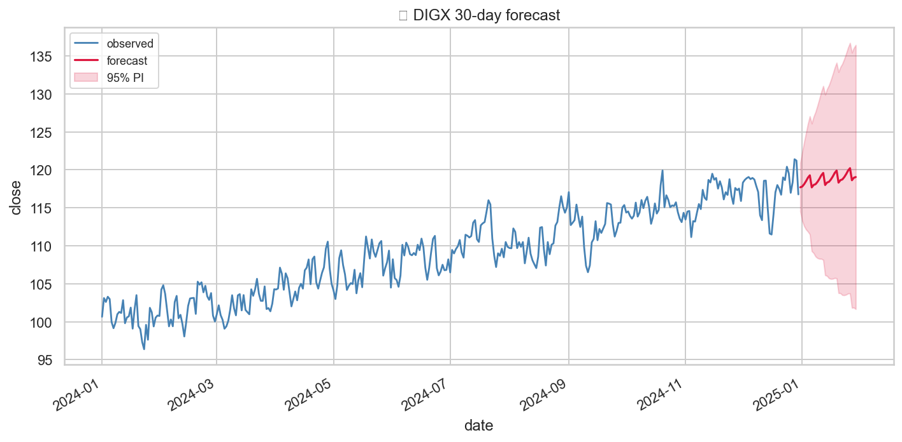
Example 5: E-commerce channel revenue & AI-driven cleanup
Goal: Clean a 5,000+ order dataset with quality issues, compute revenue by channel × category × week, surface data quality problems with the AI Reviewer, and export a clean CSV.
- Import the orders dataset.
Datasets → Import and drop
orders-demo.csv. The live profile shows the header histograms:channelhas 5 categorical bars (organic dominant),revenueandfulfillment_hrshave long tails,qtyis skewed toward 1. - Create a new pipeline.
Name it
Channel revenue weekly. - Add
cast_typeto convertorder_tsto datetime.CSV ingest reads timestamps as strings; cast is required for the date truncation in the next step.
- Add
derive_columnto extract the ISO week.Set Name:
week_startand Expression:DATE_TRUNC('week', order_ts)::DATE - Add
filter_rowsto keep only completed orders.Set the predicate to
status = 'completed'. The live grid shows the dataset drops to ~85% of original rows as refunded and cancelled orders are excluded. - Add
expectationsfor data-quality assertions.Set four assertions:
revenue > 0,qty >= 1,country IS NOT NULL, andcustomer_email IS NOT NULL OR status = 'cancelled'(explicitly allowing refunded orders without email). Each assertion contributes a run artifact; any failure stops the pipeline loudly. - Add
group_aggregateto roll up by week, channel, and category.Set By:
week_start, channel, category. Add five aggregations:order_idascount→n_orders,revenueassum→total_revenue,revenueasmean→avg_order_value,qtyassum→total_qty, andfulfillment_hrsasmedian→median_fulfillment_hrs(median avoids distortion from the long tail). - Add
sort_rowsto order the output.Sort by
week_startascending, thentotal_revenuedescending, so each week's rows list highest revenue first. - Add
export_to_fileto write CSV.Set Format:
csvand Path:weekly-channel-revenue.csv - Create an output
Point it at the CSV export step.
- Run on backend.
The pipeline completes in 2–3 seconds. The artifacts panel shows the CSV card with 933 rolled-up rows and 8 columns.
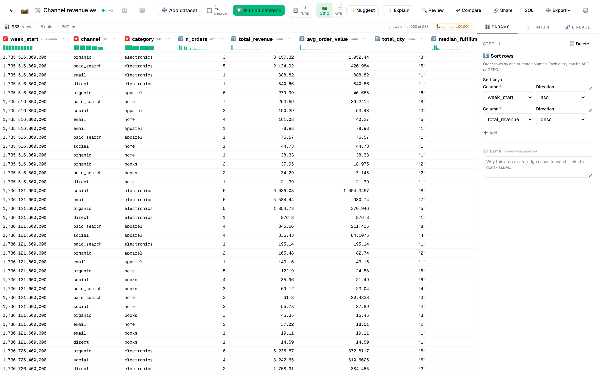
Review the results with AI
Click 🔍 Review in the toolbar. The AI Pipeline Reviewer surfaces findings like:
- "`group_aggregate` uses `mean` on `revenue` which is sensitive to outliers — consider also computing P95 or median."
- "No `expectations` assertion on `total_revenue >= 0` post-aggregation. A negative total would indicate corruption worth catching loudly."
- "3% of rows had NULL `customer_email` — if downstream users need email, add a column annotation."
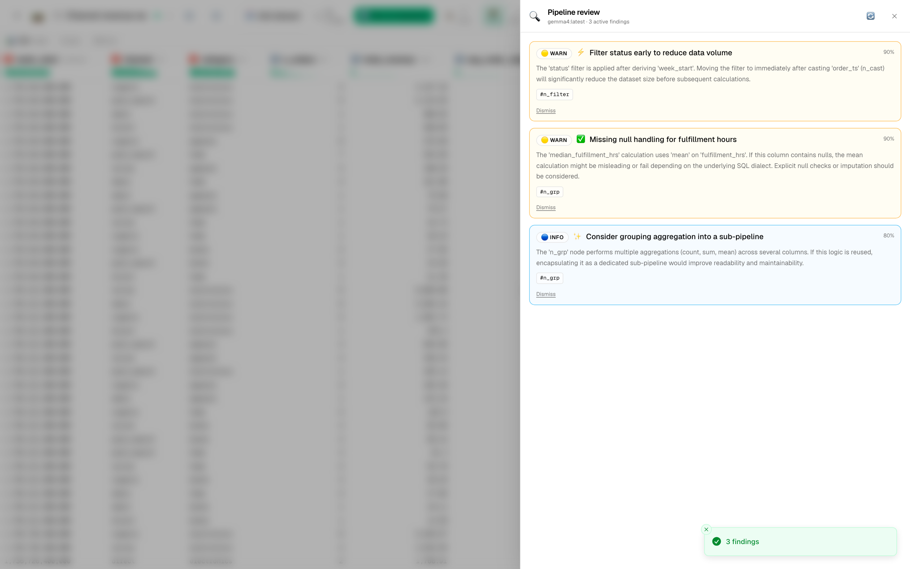
This example showcases DIG's AI Pipeline Reviewer — it only surfaces meaningful findings on datasets with real problems. The 5,000+ order sample is large enough to detect long-tail skew, missing values, and aggregation risks that smaller datasets miss. Use the reviewer during development to catch data-quality assumptions before they become production incidents.
Example 6: Factory sensor analysis & defect prediction
Goal: Derive leading-indicator vibration & temperature features from 43K rows of factory telemetry, detect defect-prone shifts, and ship a multi-panel chart for reliability engineering triage.
- Import manufacturing-demo.csv.
Datasets → Import. Profiles show 6 lines, 15 machines, ~0.5% defect events, sporadic sensor blackouts (NULLs), and ~20 unphysical temperature spikes >200°C.
- Create "Factory defect signals" pipeline.
New pipeline to isolate one production line for clarity.
- Add cast_type step.
Map column ts → datetime. Strict off so malformed timestamps become NULL rather than failing the run.
- Add filter_rows step.
Predicate:
line_id = 'LINE-D'. Scopes to 7K rows (LINE-D has the degrading machine M-D1). Filters before rolling computation avoid wasting ~85% of windowing work. - Add expectations quality gate.
Three rules:
temperature_c BETWEEN 0 AND 200(warning),vibration_mm_s >= 0(error),machine_id IS NOT NULL(error). Warning severity surfaces faulty-sensor rows without failing the run. - Add window_aggregate for defect lookback.
Function max, source column is_defect_event, partition by machine_id, order by ts ascending, alias defect_5min_lookback. Creates a leading-window feature showing defect 1 tick ahead (5 minutes at your granularity).
- Add rolling step for vibration & temperature.
Time column ts. Two windows: vibration_mm_s std 15m (alias vibration_std_15m), temperature_c mean 15m (alias temperature_mean_15m). Min periods 2. Sparklines on vibration_std_15m show clear spikes where defect pre-signals appear.
- Add derive_column for per-machine vibration p95 flag.
Name vibration_above_p95. Expression:
vibration_mm_s > QUANTILE_CONT(vibration_mm_s, 0.95) OVER (PARTITION BY machine_id). Per-machine normalization beats global thresholds — different machines have different baselines. - Add group_aggregate for fleet roll-up.
By machine_id, shift. Aggregations: ts count (n_ticks), temperature_c mean (temperature_mean), temperature_c max (temperature_max), vibration_mm_s mean (vibration_mean), vibration_mm_s std (vibration_std), is_defect_event sum (defects).
- Add sort_rows step.
Sort by defects descending. Worst-shift-first is the correct triage order for the reliability engineer.
- Add export_to_image step.
Chart kind line, X column ts, Y columns temperature_c, vibration_mm_s, defect_count_running, title "LINE-D telemetry — temperature + vibration with defect overlay".
- Add export_to_file step.
Format csv, path factory-defect-signals.csv. Add an output pointing at the CSV step.
- Run on backend.
Completes in 3-4 seconds on backend DuckDB/Polars. Artifacts panel shows PNG card + CSV card. Click vibration_std_15m column header to open the rich profile drawer — histogram shows bimodal distribution with baseline vibration cluster and long thin tail of defect pre-spikes.
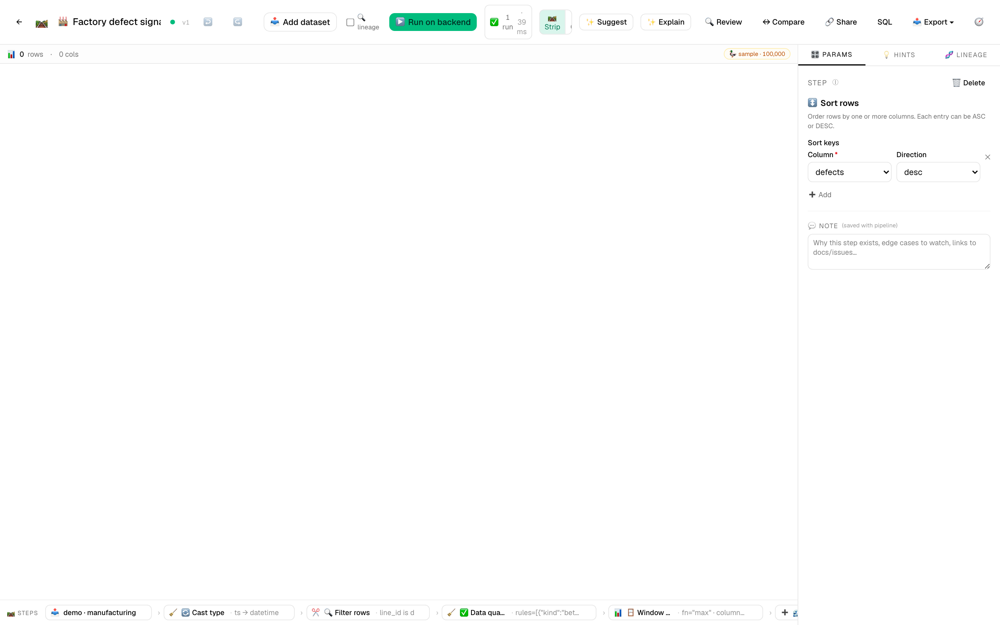
10Addendum — Packs & their features
What a pack is, the 6 bundled packs, and how to author your own.
What is a Pack?
A Pack is a distribution unit that bundles one or more steps (and optionally connectors). Instead of adding individual steps scattered across your filesystem, you install or remove packs as whole archives (`.dpack` files) via Settings → Step Packs. Steps that come from a pack get a faint violet row tint and a 📦 source tag in the step picker, so you always know which extension a step came from.
How Packs are Structured
Every pack follows the same folder layout:
my_pack/ ├── pack.json ← manifest: id, version, steps, dependencies, resources ├── README.md ← narrative description ├── LICENSES.md ← license + attribution roll-up ├── data.zip ← bundled reference data (optional) ├── steps/ │ └── my_step/ │ ├── manifest.json │ └── step.py └── connectors/ ← optional
The pack's pack.json declares which steps it contains, any Python dependencies it needs, and (if present) reference data files for lookup operations. The framework discovers and registers your pack on startup — no boilerplate registration needed.
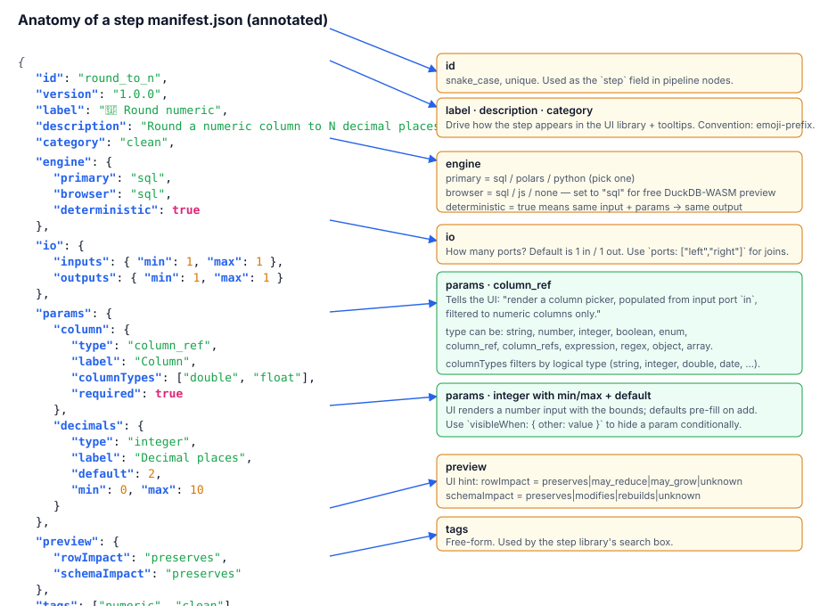
steps list names the step IDs that this pack contributes to the catalog.The 6 Bundled Packs
📈 Business charts
v0.2.0Purpose: BI dashboard staples rendered as PNG artifacts using matplotlib.
Steps:
waterfall_chart— cumulative contribution breakdownpareto_chart— 80/20 rule visualizationfunnel_chart— sequential conversion flowpie_donut— composition by categorymosaic_marimekko— 2-D part-to-whole matrixbullet_chart— target vs. actual comparisongauge_chart— single-metric speedometer
📅 Dates Pack
v0.1.0Purpose: Calendar arithmetic beyond the built-in extract_date_parts step.
Steps:
fiscal_year_parts— extract fiscal year, quarter, month with custom calendarbusiness_days_between— count working days excluding country holidaysdate_snap— snap dates to start/end of period (week, month, quarter, year)
🌍 Geospatial Pack
v1.0.1Purpose: Spatial operations, boundary lookups, and geocoding. Bundles 7 reference datasets (US states, countries, ZIP codes, cities, and supra-national groups).
Steps:
parse_geometry— parse WKT/WKB geometry strings to binary formspatial_join— point-in-polygon or polygon-overlap joingeohash_cell— encode lat/lon as geohash or H3 grid cell IDvincenty_distance— great-circle distance in miles or kilometerscrs_transform— reproject geometries to a new coordinate system (EPSG)reverse_geocode— lat/lon → nearest city namemap_match— snap noisy GPS traces to a road networkwkb_by_country— lookup country boundary by name, ISO code, or lat/lon pointwkb_by_us_state— lookup US state boundary by abbreviation, name, or pointwkb_by_us_zip— lookup US ZIP code boundary by code or pointwkb_by_us_city— lookup US city boundary by name or point
📐 Statistics Pack
v0.1.0Purpose: Hypothesis testing primitives for group comparison.
Steps:
t_test— two-sample t-test for mean differencesks_test— two-sample Kolmogorov-Smirnov test for distribution similarity
📐 Statistics Pro
v0.2.0Purpose: Full inferential-statistics toolkit extending the Statistics Pack. Includes advanced hypothesis tests, effect sizes, confidence intervals, and predictive modeling.
Steps:
chi_square— chi-square test for independence in contingency tablesanova— one-way ANOVA for comparing 3+ group meansmann_whitney— Mann-Whitney U test (non-parametric alternative to t-test)effect_size— compute Cohen's d, Cramér's V, and other effect-size metricsmultiple_comparison_correction— Bonferroni, Holm, FDR, and other p-value adjustmentsbootstrap_ci— bootstrap resampling for confidence intervals without distributional assumptionslogistic_regression— binary classification with coefficient reporting and ROC curves
⏳ Time-series Pro
v0.3.0Purpose: Stationarity tests, lag analysis, anomaly detection, and specialized time-series visualizations. Pairs with the built-in forecast, rolling, resample, and seasonal_decompose steps.
Steps:
adf_test— Augmented Dickey-Fuller test for stationaritykpss_test— KPSS test for stationarity (null: stationary)acf_pacf— autocorrelation and partial autocorrelation function plotschangepoint_detection— detect structural breaks in a time seriesanomaly_zscore— flag observations exceeding ±N standard deviationsreplace_outliers— median-based winsorization or removal of outlierscandlestick_chart— OHLC (open/high/low/close) candlestick renderstream_graph— center-baselined stacked area chart for composition over timehorizon_chart— compact small-multiples visualization for many time series
Build Your Own Pack
The framework is fully local — authoring happens on your machine, and packs are installed via `.dpack` archives with no cloud registry or GitHub Actions required. The complete guide to authoring packs, including how to bundle reference data, handle sources, and publish versioned releases, lives in docs/BUILDING_PACKS.md. For a worked example, study the geospatial_pack folder, which demonstrates reference-data bundling (7 parquet files in a zip), build-time data transforms (TopoJSON decoding), and multi-modal lookup steps.
11Addendum — Glossary
The words DIG uses for its building blocks. If you've used a spreadsheet, a SQL editor, or any visual data tool, most of this lands quickly — the names are deliberately plain.
Quick reference
| Term | One-liner |
|---|---|
| Dataset | An imported file or external source — the rows-and-columns input to your work. |
| Connector | The plugin that knows how to read or write a particular format or system. |
| Pipeline | A graph of steps that takes one or more datasets and produces an output. |
| Step | One transformation inside a pipeline — filter, cast, group, join, derive, etc. |
| Profile | The per-column statistics DIG computes on ingest (types, nulls, distincts…). |
| Sample | The subset of rows used for the in-browser live preview while you edit. |
| Hint | A rule-based suggestion shown in the editor's side panel. |
| Run | One backend execution of a pipeline. Runs write results to disk. |
| Output | What a pipeline writes when run — Parquet by default, plus any sinks you add. |
| Schedule | A cron expression that runs a pipeline automatically on a cadence. |
| Lineage | Optional per-row source tracing — click 🔍 to see which input row(s) made it. |
| Module | A reusable, packaged sub-pipeline you can drop into a larger pipeline. |
| Sub-pipeline | A pipeline published as a reusable step (metadata.publishedAsStep). Appears in every other pipeline's picker as pipeline:<id>. |
| Checkpoint | A labelled save (💾 Save) that survives autosave history pruning — the version you intend to return to. |
| Sampling | Per-pipeline setting (head / tail / random / systematic) controlling how the editor preview draws rows. |
| Pinned etag | The specific source-pipeline version a sub-pipeline consumer is locked to; bumped via the ⬆ Upgrade button. |
| Exposed param | A node parameter declared (via the 🪆 expose pill) as customisable when the pipeline is published as a step. |
In a bit more detail
Dataset
Your imported data — CSV, TSV, Excel, JSON, Parquet, Feather, generic delimited text, and scientific binary formats (NumPy, HDF5, MATLAB, NetCDF, FITS). DIG profiles every column on import so you know what you're working with. Datasets live in your local data directory — DIG never uploads them.
Connector
Each file format and external system (REST, JDBC, Postgres, MySQL, SQLite…) is a small connector plugin: one Python file + one JSON manifest under backend/connectors/. Drop in your own and DIG picks it up on next start.
Pipeline
A directed graph of steps that consumes datasets and produces output. Pipelines are portable — stored as a small .dig.json document you can commit to git, share, or replay against a different dataset of the same shape. A pipeline says what to do, never where to run it.
Step
A single transformation: keep some rows, change a column's type, group and aggregate, join two inputs, derive a column from an expression, write a file, train a model, render a chart. DIG ships 62 built-in steps plus packs — and you can drop in your own.
Profile
On ingest, DIG runs every column through a stats pass: physical type, null fraction, distinct count, min/max, top values, distribution. The profile feeds the header tooltip, smart cast picks, and the Hints panel — and auto-detects meta-types (emails, currencies, coordinates, vectors…).
Sample
The editor recomputes a live preview on every change. To stay snappy, that preview runs on a sample (default 100,000 rows) in DuckDB-WASM in your browser. The full dataset is only touched when you Run on the backend. The status strip always shows the sample size in use.
Hint
The Hints panel shows deterministic, rule-based observations from the column profile — "this column is 30% null — drop nulls?", "these two columns look like (lat, lon) — pack and cast to geographic". Not predictions, not ranked AI cards — a calm "by the way…" you can apply with one click.
Run
One execution of the whole pipeline on the backend over the full dataset. Runs happen as background jobs (navigate away and come back), produce Parquet by default, and surface progress + logs. Past runs are listed under Run history.
Output
What a pipeline writes when run. By default Parquet to your local data directory; you can also configure other sinks (another file format, a database, a webhook, a rendered chart). Outputs are first-class, versioned with the rest of the steps.
Schedule
A pipeline can run automatically on a standard cron expression (0 6 * * *). The Schedules page lets you add, list, pause, or trigger a scheduled pipeline; history shows every triggered run and its outcome.
Lineage
Optional per-row source tracing. Turn on 🔍 lineage in the editor and the run records which input row(s) each output row came from — then click 🔍 on any output row to jump back to the source. Adds ~10–30% run time; off by default.
Module
A pipeline you've packaged for reuse. Drop a module into another pipeline as a single node and DIG runs it inline like any other step — a small library of reusable patterns without copy-pasting steps between pipelines.
.dig.json schema, the WASM/backend split) lives in docs/ARCHITECTURE.md; the full step catalogue in docs/STEPS.md.